Apollo 11
Wikipedia tells this mission in one line, one thing after another. It was not one thing after another. From 17:44:00 UTC on 20 July 1969 there were three separated places with three different sets of information, and one of them spent forty-eight minutes of every orbit out of radio contact with the Earth. Read here as a score: vertical position is Universal Time, and silence is drawn.
Buzz Aldrin
Apollo 11 (July 16–24, 1969) was the American spaceflight that first landed humans on the Moon, and the fifth crewed mission of NASA's Apollo program.
The mission was crewed by Commander Neil Armstrong, Command Module Pilot Michael Collins, and Lunar Module Pilot Edwin "Buzz" Aldrin, all of whom were on their second and final spaceflight.
Launched atop a Saturn V rocket from Kennedy Space Center in Florida on July 16 at 13:32 UTC, the Apollo spacecraft consisted of three parts: the command module (CM), which housed the three astronauts and was the only part to return to Earth; the service module (SM), which provided propulsion, electrical power, oxygen, and water to the command module; and the Lunar Module (LM), which had two stages—a descent stage with a large engine and fuel tanks for landing on the Moon, and a lighter ascent stage containing a cabin for two astronauts and a small engine to return them to lunar orbit.
After a three-day transit, Armstrong and Aldrin descended to the surface aboard the LM Eagle, landing in the Sea of Tranquility (Mare Tranquillitatis) on July 20 at 20:17 UTC while Collins remained in lunar orbit aboard the CM Columbia. Armstrong became the first human to walk on the Moon approximately six hours after landing, followed by Aldrin nineteen minutes later. Together they spent around two and a half hours walking on the surface, planting an American flag, speaking with President Richard Nixon who was in the White House, deploying scientific instruments, and collecting 21.5 kg (47.5 lb) of lunar material. After more than 21 hours on the surface, they rejoined Collins in lunar orbit, and the crew returned safely to Earth on July 24, splashing down in the Pacific Ocean.
Apollo 11 was the culmination of the Space Race, a geopolitical competition between the United States and the Soviet Union rooted in Cold War rivalry. It fulfilled a national goal set by President John F. Kennedy in May 1961, who had challenged the United States to land a man on the Moon and return him safely before the end of the decade. The program overcame a severe setback with the fatal Apollo 1 launchpad fire in January 1967 and drew on technologies developed through the preceding Mercury and Gemini programs. The Soviet Union, despite early leads in spaceflight, was unable to match the Saturn V rocket, and its uncrewed lunar probe Luna 15 crashed on the Moon on July 21, while Neil Armstrong and Buzz Aldrin were still on the lunar surface.
Armstrong's moonwalk was broadcast live to an estimated 600 million viewers, roughly one-fifth of the world's population, making it among the most-watched television events in history. Lunar samples returned by the mission led to the identification of three previously unrecognized minerals, and scientific instruments deployed on the surface continued returning data for years afterwards. The crew were honoured with ticker-tape parades, a world goodwill tour, and the Presidential Medal of Freedom. The command module Columbia is preserved at the National Air and Space Museum in Washington, D.C., while the descent stage of Eagle remains on the lunar surface.
In the late 1950s and early 1960s, the United States was engaged in the Cold War, a geopolitical rivalry with the Soviet Union. On October 4, 1957, the Soviet Union launched Sputnik 1, the first artificial satellite, surprising the world and fueling fears about Soviet technological and military capabilities. Its success demonstrated that the USSR could potentially deliver nuclear weapons over intercontinental distances, challenging American claims of military, economic, and technological superiority.
This incident sparked the Sputnik crisis and ignited the Space Race, as both superpowers sought to demonstrate superiority in spaceflight. President Dwight D. Eisenhower responded to the challenge posed by Sputnik by creating the National Aeronautics and Space Administration (NASA), and initiating Project Mercury, which aimed to place a man into Earth orbit. The Soviets took the lead on April 12, 1961, when cosmonaut Yuri Gagarin became the first person in space and the first to orbit the Earth. Nearly a month later, on May 5, 1961, Alan Shepard became the first American in space; his 15-minute flight was suborbital, not a full orbit.
Because the Soviet Union had launch vehicles with higher lift capacity, President John F. Kennedy, Eisenhower's successor, chose a challenge that exceeded the capabilities of the existing generation of rockets, so that both countries would be starting from an equal position. A crewed mission to the Moon would serve this purpose.
On May 25, 1961, Kennedy addressed the United States Congress on "Urgent National Needs."
I believe that this nation should commit itself to achieving the goal, before this decade [1960s] is out, of landing a man on the Moon and returning him safely to the Earth. No single space project in this period will be more impressive to mankind, or more important for the long-range exploration of space; and none will be so difficult or expensive to accomplish.
We propose to accelerate the development of the appropriate lunar space craft. We propose to develop alternate liquid and solid fuel boosters, much larger than any now being developed, until certain which is superior. We propose additional funds for other engine development and for unmanned explorations—explorations which are particularly important for one purpose which this nation will never overlook: the survival of the man who first makes this daring flight. But in a very real sense, it will not be one man going to the Moon—if we make this judgment affirmatively, it will be an entire nation. For all of us must work to put him there.
John F. Kennedy · address to Congress on Urgent National Needs · 25 May 1961
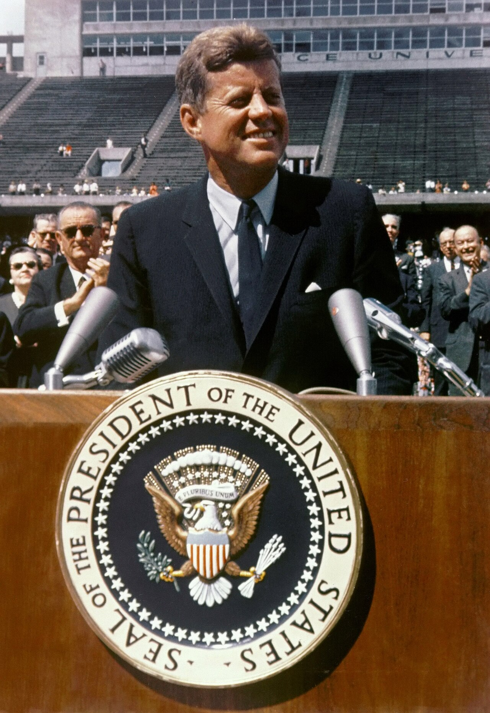
There is no strife, no prejudice, no national conflict in outer space as yet. Its hazards are hostile to us all. Its conquest deserves the best of all mankind, and its opportunity for peaceful cooperation may never come again. But why, some say, the Moon? Why choose this as our goal? And they may well ask, why climb the highest mountain? Why, 35 years ago, fly the Atlantic? Why does Rice play Texas?
We choose to go to the Moon! We choose to go to the Moon ... We choose to go to the Moon in this decade and do the other things, not because they are easy, but because they are hard; because that goal will serve to organize and measure the best of our energies and skills, because that challenge is one that we are willing to accept, one we are unwilling to postpone, and one we intend to win, and the others, too.
John F. Kennedy · Rice University, Houston · 12 September 1962
In spite of that, the proposed program faced widespread opposition and was dubbed a "moondoggle" by Norbert Wiener, a mathematician at the Massachusetts Institute of Technology. The effort to land a man on the Moon already had a name: Project Apollo. When Kennedy met with Nikita Khrushchev, the Premier of the Soviet Union in June 1961, he proposed making the Moon landing a joint project, but Khrushchev declined the offer. Kennedy again proposed a joint expedition to the Moon in a speech to the United Nations General Assembly on September 20, 1963. The idea of a joint Moon mission was ultimately abandoned after Kennedy's death.
An early and crucial decision was choosing lunar orbit rendezvous over both direct ascent and Earth orbit rendezvous. A space rendezvous is an orbital maneuver in which two spacecraft navigate through space and meet up. In July 1962, NASA head James Webb announced that lunar orbit rendezvous would be used and that the Apollo spacecraft would have three major parts: a command module (CM) with a cabin for the three astronauts, and the only part that returned to Earth; a service module (SM), which supported the command module with propulsion, electrical power, oxygen, and water; and a lunar module (LM) that had two stages—a descent stage for landing on the Moon, and an ascent stage to place the astronauts back into lunar orbit. This design meant the spacecraft could be launched by a single Saturn V rocket that was then under development.
Technologies and techniques required for Apollo were developed by Project Gemini. The Apollo project was enabled by NASA's adoption of new advances in semiconductor device, including metal–oxide–semiconductor field-effect transistors (MOSFETs) in the Interplanetary Monitoring Platform (IMP) and silicon integrated circuit (IC) chips in the Apollo Guidance Computer (AGC).
Project Apollo was abruptly halted by the Apollo 1 fire on January 27, 1967, in which astronauts Gus Grissom, Ed White, and Roger B. Chaffee died, and the subsequent investigation. In October 1968, Apollo 7 evaluated the command module in Earth orbit, and in December Apollo 8 tested it in lunar orbit. In March 1969, Apollo 9 put the lunar module through its paces in Earth orbit, and in May Apollo 10 conducted a "dress rehearsal" in lunar orbit. By July 1969, all was in readiness for Apollo 11 to take the final step onto the Moon.
The Soviet Union appeared to be winning the Space Race, but its early lead was overtaken by the US Gemini program and Soviet failure to develop the N1 launcher, which would have been comparable to the Saturn V. Seeing these failures, the Soviets then attempted to beat the US to return lunar material to the Earth by means of uncrewed probes. On July 13, three days before Apollo 11's launch, the Soviet Union launched Luna 15, which reached lunar orbit before Apollo 11. During descent, a malfunction caused Luna 15 to crash in Mare Crisium about two hours before Armstrong and Aldrin took off from the Moon's surface to return to earth. The Nuffield Radio Astronomy Laboratories radio telescope in England recorded transmissions from Luna 15 during its descent, and these were released in July 2009 for the 40th anniversary of Apollo 11.
Personnel
- Prime crew
- Neil Armstrong Commander
- Michael Collins Command Module Pilot
- Edwin "Buzz" Aldrin Jr. Lunar Module Pilot
- All three on their second and last spaceflight.
- Backup crew
- Jim Lovell Commander
- William Anders Command Module Pilot
- Fred Haise Lunar Module Pilot
- Ken Mattingly moved into parallel training as backup CMP in case of delay past July.
- Support crew & CAPCOM
- Mattingly · Evans · Pogue support crew
- Anders · Evans · Haise · Lovell · Mattingly capsule communicators
- Duke · Garriott · Lind · McCandless II · Schmitt capsule communicators
The initial crew assignment of Commander Neil Armstrong, Command Module Pilot Jim Lovell, and Lunar Module Pilot Buzz Aldrin on the backup crew for Apollo 9 was officially announced on November 20, 1967. Due to design and manufacturing delays in the LM, Apollo 8 and Apollo 9 swapped prime and backup crews, and Armstrong's crew became the backup for Apollo 8. Based on the normal crew rotation scheme, Armstrong was then expected to command Apollo 11. There would be one change: Michael Collins, the CMP on the Apollo 8 crew, began experiencing trouble with his legs. Doctors diagnosed a bony growth between his fifth and sixth vertebrae, requiring surgery. Lovell took his place on the Apollo 8 crew, and when Collins recovered he joined Armstrong's crew as CMP.
Deke Slayton gave Armstrong the option to replace Aldrin with Lovell, since some thought Aldrin was difficult to work with. Armstrong had no issues working with Aldrin but thought it over for a day before declining. He thought Lovell deserved to command his own mission (eventually Apollo 13).
The Apollo 11 prime crew had none of the close cheerful camaraderie characterized by that of Apollo 12. Instead, they forged an amiable working relationship. Armstrong in particular was notoriously aloof, but Collins, who considered himself a loner, confessed to rebuffing Aldrin's attempts to create a more personal relationship. Aldrin and Collins described the crew as "amiable strangers". Armstrong did not agree with the assessment, and said "all the crews I was on worked very well together."
The capsule communicator (CAPCOM) was an astronaut stationed at the Mission Control Center in Houston, Texas, and was typically the only person permitted to communicate directly with the flight crew. This practice ensured that messages came from someone best able to understand the situation in the spacecraft and to relay guidance from flight controllers as clearly as possible.
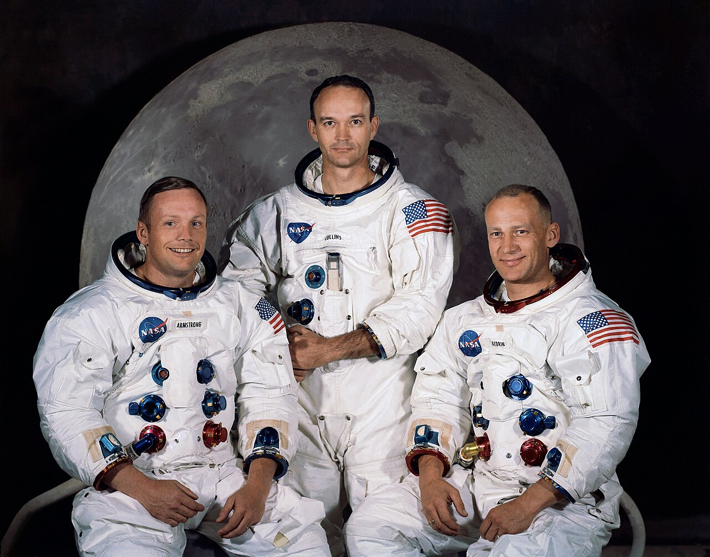
Five colours, assigned
These are the only five colours on the following pages, and they are not decoration: from here on, a coloured band beside the Houston lane says which team held the console. A sixth ink — red — appears three times only: the 1201/1202 program alarms, the propellant calls during the final descent, and Luna 15.
Other key personnel — twelve names, from the article's table
- Science
- Farouk El-Baz Geologist; studied geology of the Moon, identified landing locations, trained pilots
- Gene Shoemaker Geologist who trained astronauts in field geology
- Millicent Goldschmidt Microbiologist; aseptic lunar material collection techniques
- Computing
- Margaret Hamilton Onboard flight computer software engineer
- Eldon C. Hall Apollo Guidance Computer hardware designer
- Jack Garman Computer engineer and technician
- Hardware & ground
- Kurt Debus Supervised construction of launch pads and infrastructure
- Eleanor Foraker Tailor who designed space suits
- Milton E. Harr Geotechnical engineer; designed the LM footpads
- John Houbolt Route planner
- Bill Tindall Coordinated mission techniques
- Jamye Flowers Secretary for astronauts
Preparations
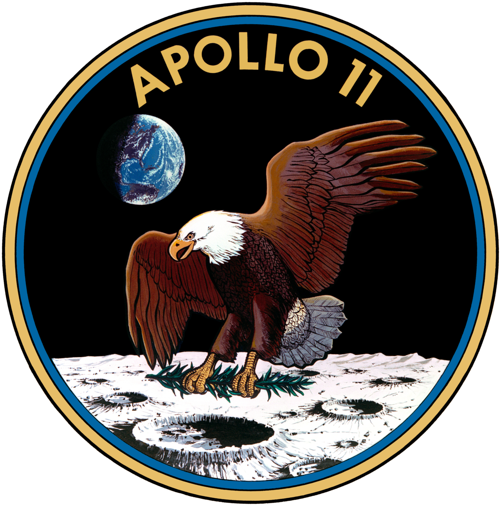
The Apollo 11 mission emblem was designed by Collins, who wanted a symbol for "peaceful lunar landing by the United States". At Lovell's suggestion, he chose the bald eagle, the national bird of the United States, as the symbol. Tom Wilson, a simulator instructor, suggested an olive branch in its beak to represent their peaceful mission. Collins added a lunar background with the Earth in the distance. The sunlight in the image was coming from the wrong direction; the shadow should have been in the lower part of the Earth instead of the left.
Aldrin, Armstrong and Collins decided the Eagle and the Moon would be in their natural colors, and decided on a blue and gold border. Armstrong was concerned that "eleven" would not be understood by non-English speakers, so they went with "Apollo 11", and they decided not to put their names on the patch, so it would "be representative of everyone who had worked toward a lunar landing".
An illustrator at the Manned Spacecraft Center (MSC) did the artwork, which was then sent off to NASA officials for approval. The design was rejected. Bob Gilruth, the director of the MSC felt the talons of the eagle looked "too warlike". After some discussion, the olive branch was moved to the talons. When the Eisenhower dollar coin was released in 1971, the patch design provided the eagle for its reverse side. The design was also used for the smaller Susan B. Anthony dollar unveiled in 1979.
Call signs § Call signs
After the crew of Apollo 10 named their spacecraft Charlie Brown and Snoopy, assistant manager for public affairs Julian Scheer wrote to George Low, the Manager of the Apollo Spacecraft Program Office at the MSC, to suggest the Apollo 11 crew be less flippant in naming their craft. The name Snowcone was used for the CM and Haystack was used for the LM in both internal and external communications during early mission planning.
The LM was named Eagle after the motif which was featured prominently on the mission insignia. At Scheer's suggestion, the CM was named Columbia after Columbiad, the giant cannon that launched a spacecraft (also from Florida) in Jules Verne's 1865 novel From the Earth to the Moon. It also referred to Columbia, a historical name of the United States. In Collins' 1976 book, he said Columbia was in reference to Christopher Columbus.
Mementos § Mementos
The astronauts had personal preference kits (PPKs), small bags containing personal items of significance they wanted to take with them on the mission. Five 0.5-pound (0.23 kg) PPKs were carried on Apollo 11: three (one for each astronaut) were stowed on Columbia before launch, and two on Eagle.
Neil Armstrong's LM PPK contained a piece of wood from the Wright brothers' 1903 Wright Flyer's left propeller and a piece of fabric from its wing, along with a diamond-studded astronaut pin originally given to Slayton by the widows of the Apollo 1 crew. This pin had been intended to be flown on that mission and given to Slayton afterwards, but following the disastrous launch pad fire and subsequent funerals, the widows gave the pin to Slayton. Armstrong took it with him on Apollo 11.
NASA's Apollo Site Selection Board announced five potential landing sites on February 8, 1968. These were the result of two years' worth of studies based on high-resolution photography of the lunar surface by the five uncrewed probes of the Lunar Orbiter program and information about surface conditions provided by the Surveyor program. The best Earth-bound telescopes could not resolve features with the resolution Project Apollo required. The landing site had to be close to the lunar equator to minimize the amount of propellant required, clear of obstacles to minimize maneuvering, and flat to simplify the task of the landing radar. Scientific value was not a consideration.
Areas that appeared promising on photographs taken on Earth were often found to be totally unacceptable. The original requirement that the site be free of craters had to be relaxed, as no such site was found. Five sites were considered: Sites 1 and 2 were in the Sea of Tranquility (Mare Tranquillitatis); Site 3 was in the Central Bay (Sinus Medii); and Sites 4 and 5 were in the Ocean of Storms (Oceanus Procellarum). The final site selection was based on seven criteria:
- The site needed to be smooth, with relatively few craters;
- with approach paths free of large hills, tall cliffs or deep craters that might confuse the landing radar and cause it to issue incorrect readings;
- reachable with a minimum amount of propellant;
- allowing for delays in the launch countdown;
- providing the Apollo spacecraft with a free-return trajectory, one that would allow it to coast around the Moon and safely return to Earth without requiring any engine firings should a problem arise on the way to the Moon;
- with good visibility during the landing approach, meaning the Sun would be between 7 and 20 degrees behind the LM; and
- a general slope of less than two degrees in the landing area.
The requirement for the Sun angle was particularly restrictive, limiting the launch date to one day per month. A landing just after dawn was chosen to limit the temperature extremes the astronauts would experience. The Apollo Site Selection Board selected Site 2, with Sites 3 and 5 as backups in the event of the launch being delayed. In May 1969, Apollo 10's lunar module flew to within 15 kilometers (9.3 mi) of Site 2, and reported it was acceptable.
During the first press conference after the Apollo 11 crew was announced, the first question was, "Which one of you gentlemen will be the first man to step onto the lunar surface?" Slayton told the reporter it had not been decided, and Armstrong added that it was "not based on individual desire". The decision was announced in a press conference on April 14, 1969. The article gives four accounts of why, and does not choose between them.
For decades, Aldrin believed the final decision was largely driven by the Lunar Module's hatch location. The crew tried a simulation in which Aldrin left the spacecraft first, but he damaged the simulator while attempting to egress.
Aldrin heard that Armstrong would be the first because Armstrong was a civilian, which made Aldrin livid. He attempted to persuade other Lunar Module pilots he should be first, but they responded cynically about what they perceived as a lobbying campaign.
Attempting to stem interdepartmental conflict, Slayton told Aldrin that Armstrong would be first since he was the commander. The media accused Armstrong of exercising his commander's prerogative to exit the spacecraft first.
Chris Kraft revealed in his 2001 autobiography that a meeting occurred between Gilruth, Slayton, Low, and himself to make sure Aldrin would not be the first to walk on the Moon. They argued the first person should be like Charles Lindbergh, a calm and quiet person.
Four accounts, one decision. The source resolves none of them, and neither does this page. Slayton told Armstrong the plan was to have him leave the spacecraft first, if he agreed. Armstrong said, "Yes, that's the way to do it."
The ascent stage of LM-5 Eagle arrived at the Kennedy Space Center on January 8, 1969, followed by the descent stage four days later, and CSM-107 Columbia on January 23. There were several differences between Eagle and Apollo 10's LM-4 Snoopy: Eagle had a VHF radio antenna to facilitate communication with the astronauts during their EVA on the lunar surface; a lighter ascent engine; more thermal protection on the landing gear; and a package of scientific experiments known as the Early Apollo Scientific Experiments Package (EASEP). The only change in the configuration of the command module was the removal of some insulation from the forward hatch.
The S-IVB third stage of Saturn V AS-506 had arrived on January 18, followed by the S-II second stage on February 6, S-IC first stage on February 20, and the Saturn V Instrument Unit on February 27. At 12:30 on May 20, the 5,443-tonne assembly departed the Vehicle Assembly Building atop the crawler-transporter, bound for Launch Pad 39A, part of Launch Complex 39, while Apollo 10 was still on its way to the Moon. A countdown test commenced on June 26, and concluded on July 2. The launch complex was floodlit on the night of July 15, when the crawler-transporter carried the mobile service structure back to its parking area. In the early hours of the morning, the fuel tanks of the S-II and S-IVB stages were filled with liquid hydrogen. Fueling was completed by three hours before launch. Launch operations were partly automated, with 43 programs written in the ATOLL programming language.
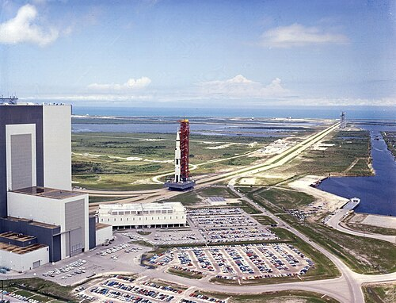
And at the right edge of the window, permanently: the whole eight days drawn twice. The left rail is true time, linear from the launch morning to the deck of the Hornet. The right rail is this page. The hairlines between them tie each passage to its real duration — where they fan out, the page is stretching time; where they converge, it is compressing it. The scale of this page is dishonest by design and the minimap is where it admits it.
08:00:00 → 13:32:00 UTC
05 h 32 m
The clock starts here, and it is a local clock converted: the article gives the launch morning in Eastern Daylight Time and the launch itself in both — 13:32:00 UTC, 9:32:00 am EDT. Every EDT value below is placed at EDT + 4 h, and both are printed.
They then donned their space suits and began breathing pure oxygen. At 06:30, they headed out to Launch Complex 39. Haise entered Columbia about three hours and ten minutes before launch time. Along with a technician, he helped Armstrong into the left-hand couch at 06:54. Five minutes later, Collins joined him, taking up his position on the right-hand couch. Finally, Aldrin entered, taking the center couch. Haise left around two hours and ten minutes before launch. The closeout crew sealed the hatch, and the cabin was purged and pressurized. The closeout crew then left the launch complex about an hour before launch time.
13:32:00 → 16:56:03 UTC
03 h 24 m 03 s
A second lane opens, and it is not a spacecraft: it is the ground. One million people on the highways and beaches, thirty-three countries, twenty-five million American televisions. For three and a half hours the two lanes are looking at the same object from opposite ends.
Dignitaries included the Chief of Staff of the United States Army, General William Westmoreland, four cabinet members, 19 state governors, 40 mayors, 60 ambassadors and 200 congressmen. Vice President Spiro Agnew viewed the launch with former president Lyndon B. Johnson and his wife Lady Bird Johnson. Around 3,500 media representatives were present. About two-thirds were from the United States; the rest came from 55 other countries. The launch was televised live in 33 countries, with an estimated 25 million viewers in the United States alone. Millions more around the world listened to radio broadcasts. President Richard Nixon viewed the launch from his office in the White House with his NASA liaison officer, Apollo astronaut Frank Borman. Lodging near Cape Canaveral was reported as being booked months ahead in advance for the launch by a Florida newspaper.
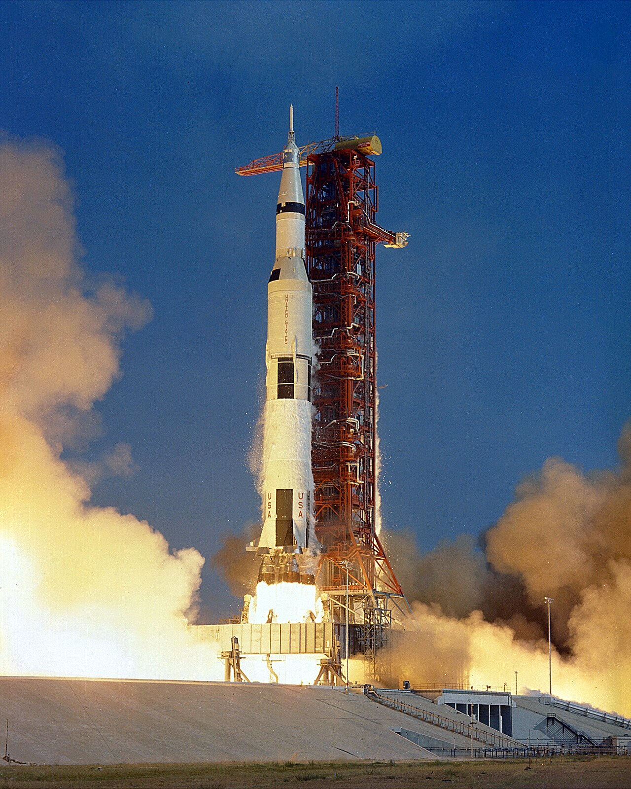
The trans-lunar injection (TLI) burn took about 5 minutes and 47 seconds and started at 16:16:16 UTC. About 30 minutes later, with Collins in the left seat and at the controls, the transposition, docking, and extraction maneuver was performed. This involved separating Columbia from the spent S-IVB stage, turning around, and docking with Eagle still attached to the stage. After the LM was extracted, the combined spacecraft headed for the Moon, while the rocket stage flew on a trajectory past the Moon. This was done to avoid the third stage colliding with the spacecraft, the Earth, or the Moon. A slingshot effect from passing around the Moon threw it into an orbit around the Sun.
16:56:03 → 12:52:00 UTC
3 d 19 h 55 m 57 s
Almost four days in the vertical space that the previous three and a half hours occupied. This is the largest scale distortion on the page and the minimap shows it splaying. The lane's rule begins to break here: from lunar orbit insertion onward the spacecraft spends 48 minutes of every 2-hour orbit behind the Moon, unable to hear the Earth.
In the thirty orbits that followed, the crew saw passing views of their landing site in the southern Sea of Tranquility about 12 miles (19 km) southwest of the crater Sabine D. The site was selected in part because it had been characterized as relatively flat and smooth by the automated Ranger 8 and Surveyor 5 landers and the Lunar Orbiter mapping spacecraft, and because it was unlikely to present major landing or EVA challenges. It lay about 25 kilometers (16 mi) southeast of the Surveyor 5 landing site, and 68 kilometers (42 mi) southwest of Ranger 8's crash site.
12:52:00 → 17:44:00 UTC
04 h 52 m
Everything before this is one line. Everything after it is two, and then three. This is the only structural event in the mission that the article renders as a subordinate clause.
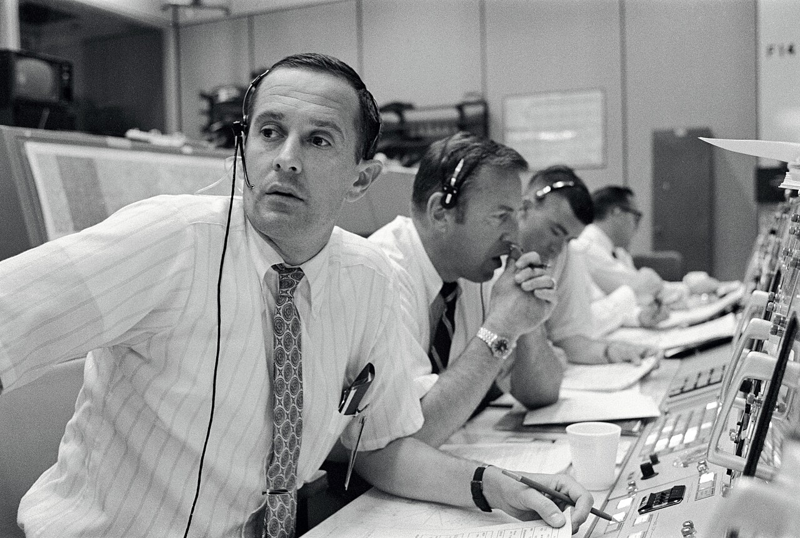
infobox: Undocking date
ends 96 h 47 m 57 s docked
From this second there are two vehicles, two crews and two sets of information, and the article has one paragraph for it. Below: each craft photographed by the other, from the two sides of the gap that had just opened.
Houston now has two vehicles to listen to, and for forty-eight minutes of every orbit it can only hear one of them.
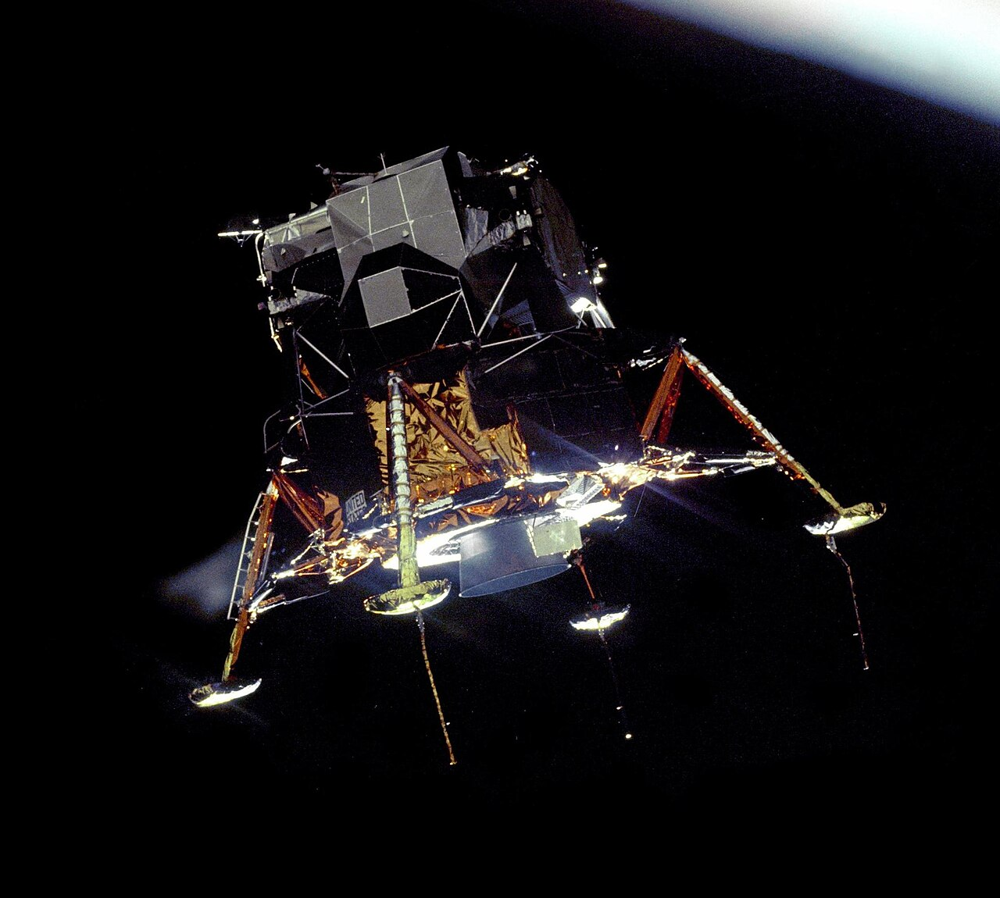
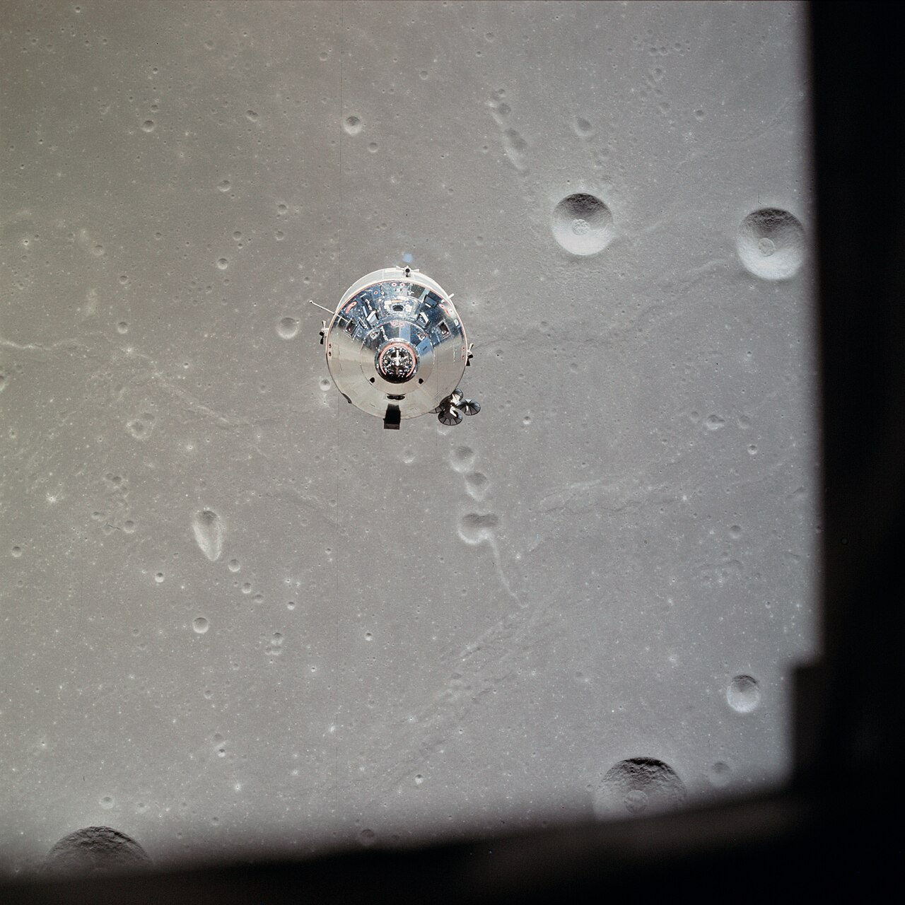
6,000 ft → 0
ends 20:17:40 UTC
For the last 6,000 feet the source stops giving times and starts giving heights — 6,000 ft, 250 ft, 107 ft, 100 ft — so this stave stops measuring time and measures height instead. The scale is logarithmic, because the source spends more words on the last hundred feet than on the first five thousand. The clock returns once, at the bottom.
The program alarms indicated "executive overflows", meaning the guidance computer could not complete all its tasks in real-time and had to postpone some of them.
Margaret Hamilton, Director of Apollo Flight Computer Programming at the MIT Charles Stark Draper Laboratory, later recalled: “To blame the computer for the Apollo 11 problems is like blaming the person who spots a fire and calls the fire department. Actually, the computer was programmed to do more than recognize error conditions. A complete set of recovery programs was incorporated into the software. The software's action, in this case, was to eliminate lower priority tasks and re-establish the more important ones. The computer, rather than almost forcing an abort, prevented an abort. If the computer hadn't recognized this problem and taken recovery action, I doubt if Apollo 11 would have been the successful Moon landing it was.”
During the mission, the cause was diagnosed as the rendezvous radar switch being in the wrong position, causing the computer to process data from both the rendezvous and landing radars at the same time. Software engineer Don Eyles concluded in a 2005 Guidance and Control Conference paper that the problem was due to a hardware design bug previously seen during testing of the first uncrewed LM in Apollo 5. Having the rendezvous radar on (so it was warmed up in case of an emergency landing abort) should have been irrelevant to the computer, but an electrical phasing mismatch between two parts of the rendezvous radar system could cause the stationary antenna to appear to the computer as dithering back and forth between two positions, depending upon how the hardware randomly powered up. The extra spurious cycle stealing, as the rendezvous radar updated an involuntary counter, caused the computer alarms.
Eagle was traveling too fast. The problem could have been mascons—concentrations of high mass in a region or regions of the Moon's crust that contains a gravitational anomaly, potentially altering Eagle's trajectory. Flight Director Gene Kranz speculated that it could have resulted from extra air pressure in the docking tunnel, or a result of Eagle's pirouette maneuver.
Armstrong considered landing short of the boulder field so they could collect geological samples from it, but could not since their horizontal velocity was too high. Throughout the descent, Aldrin called out navigation data to Armstrong, who was busy piloting Eagle.
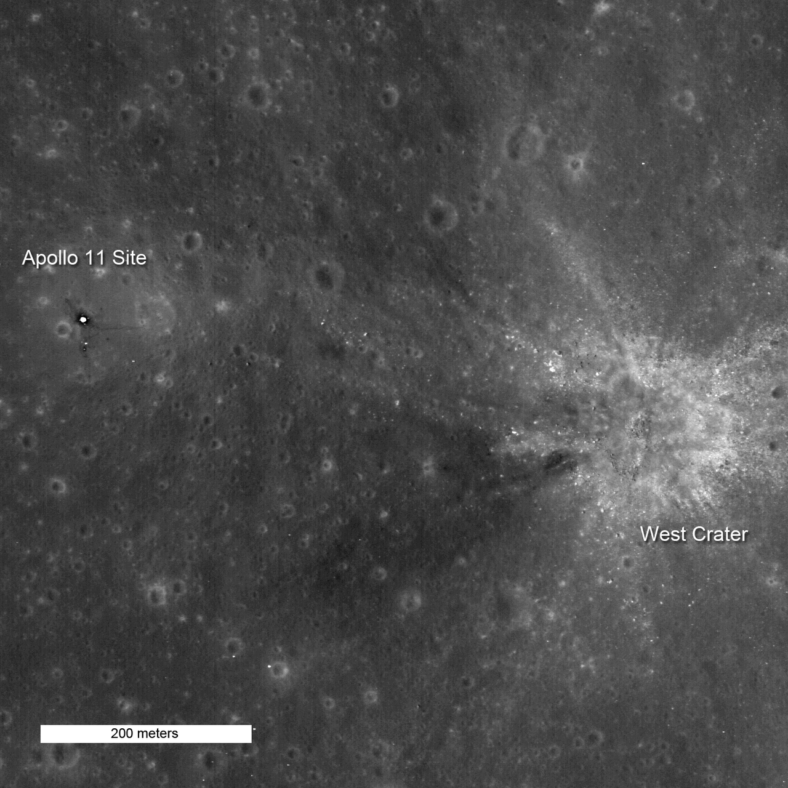
Lunar dust kicked up by the LM's engine began to impair his ability to determine the spacecraft's motion. Some large rocks jutted out of the dust cloud, and Armstrong focused on them during his descent so he could determine the spacecraft's speed.
Armstrong was supposed to immediately shut the engine down, as the engineers suspected the pressure caused by the engine's own exhaust reflecting off the lunar surface could make it explode, but he forgot. Three seconds later, Eagle landed and Armstrong shut the engine down. Aldrin immediately said “Okay, engine stop. ACA—out of detent.” Armstrong acknowledged: “Out of detent. Auto.” Aldrin continued: “Mode control—both auto. Descent engine command override off. Engine arm—off. 413 is in.”
ACA was the Attitude Control Assembly—the LM's control stick. Output went to the LGC to command the reaction control system (RCS) jets to fire. “Out of Detent” meant the stick had moved away from its centered position; it was spring-centered like the turn indicator in a car. Address 413 of the Abort Guidance System (AGS) contained the variable that indicated the LM had landed.
Information available to the crew and mission controllers during the landing showed the LM had enough fuel for another 25 seconds of powered flight before an abort without touchdown would have become unsafe, but post-mission analysis showed that the real figure was probably closer to 50 seconds. Apollo 11 landed with less fuel than most subsequent missions, and the astronauts encountered a premature low fuel warning. This was later found to be the result of the propellant sloshing more than expected, uncovering a fuel sensor. On subsequent missions, extra anti-slosh baffles were added to the tanks to prevent this.
Armstrong's unrehearsed change of call sign from “Eagle” to “Tranquility Base” emphasized to listeners that landing was complete and successful.
Left margin: propellant. The bar tracks your descent through the stave and does not refill when you scroll back — it is the one thing on this page other than time that is allowed to move, and it only decreases. Its two labelled values, 90 seconds remaining at 100 feet and 216 lb usable at touchdown, are the only propellant quantities the article gives.
20:17:40 → 02:39:33 UTC
06 h 21 m 53 s
Three lanes now, and this is the passage the article gets structurally wrong: “Columbia in lunar orbit” is printed after “Lunar ascent”, three sections later, although every sentence in it happens here, alongside the surface. It has been moved back to where it belongs. Collins' lane goes dark on schedule.
He then took communion privately. Aldrin chose to refrain from directly mentioning taking communion on the Moon. Aldrin was an elder at the Webster Presbyterian Church, and his communion kit was prepared by the pastor of the church, Dean Woodruff. Webster Presbyterian possesses the chalice used on the Moon and commemorates the event each year on the Sunday closest to July 20.
During training on Earth, everything required had been neatly laid out in advance, but on the Moon the cabin contained a large number of other items as well, such as checklists, food packets, and tools. Six hours and thirty-nine minutes after landing, Armstrong and Aldrin were ready to go outside, and Eagle was depressurized.
In his autobiography he wrote: “this venture has been structured for three men, and I consider my third to be as necessary as either of the other two”. In the 48 minutes of each orbit when he was out of radio contact with the Earth while Columbia passed round the far side of the Moon, the feeling he reported was not fear or loneliness, but rather:
On his first orbits on the back side of the Moon, Collins performed maintenance activities such as dumping excess water produced by the fuel cells and preparing the cabin for Armstrong and Aldrin to return.
Mission Control advised him to assume manual control and implement Environmental Control System Malfunction Procedure 17. Instead, Collins flicked the switch on the system from automatic to manual and back to automatic again, and carried on with normal housekeeping chores, while keeping an eye on the temperature. When Columbia came back around to the near side of the Moon again, Collins was able to report that the problem had been resolved. For the next couple of orbits, he described his time on the back side of the Moon as “relaxing”.
02:39:33 → 05:11:13 UTC
02 h 31 m 40 s
The densest passage on the page, and the one where the source is least helpful about time: four instants are given to the second, and everything else is given only as sequence. Blocks marked “—” are placed in order between the instants that are timed. Houston's console has changed hands: Charlesworth's Green team held launch and EVA.
Nixon originally had a long speech prepared to read during the phone call, but Frank Borman, who was at the White House as a NASA liaison during Apollo 11, convinced Nixon to keep his words brief.
Nixon: Hello, Neil and Buzz. I'm talking to you by telephone from the Oval Room at the White House. And this certainly has to be the most historic telephone call ever made from the White House. I just can't tell you how proud we all are of what you have done. For every American, this has to be the proudest day of our lives. And for people all over the world, I am sure that they too join with Americans in recognizing what an immense feat this is. Because of what you have done, the heavens have become a part of man's world. And as you talk to us from the Sea of Tranquility, it inspires us to redouble our efforts to bring peace and tranquility to Earth. For one priceless moment in the whole history of man, all the people on this Earth are truly one: one in their pride in what you have done, and one in our prayers that you will return safely to Earth.
Armstrong: Thank you, Mr. President. It's a great honor and privilege for us to be here, representing not only the United States, but men of peace of all nations, and with interest and a curiosity, and men with a vision for the future. It's an honor for us to be able to participate here today.
Nixon: Thank you very much, and I look forward, all of us look forward, to seeing you on the Hornet on Thursday.
As metabolic rates remained generally lower than expected for both astronauts throughout the walk, Mission Control granted the astronauts a 15-minute extension. In a 2010 interview, Armstrong explained that NASA limited the first moonwalk's time and distance because there was no empirical proof of how much cooling water the astronauts' PLSS backpacks would consume to handle their body heat generation while working on the Moon.
When later asked about his quote, Armstrong said he believed he said “for a man”, and subsequent printed versions of the quote included the “a” in square brackets. One explanation for the absence may be that his accent caused him to slur the words “for a” together; another is the intermittent nature of the audio and video links to Earth, partly because of storms near Parkes Observatory. A more recent digital analysis of the tape claims to reveal the “a” may have been spoken but obscured by static. Other analysis points to the claims of static and slurring as “face-saving fabrication”, and that Armstrong himself later admitted to misspeaking the line.
He then folded the bag and tucked it into a pocket on his right thigh. Twelve minutes after the sample was collected, he removed the TV camera from the MESA and made a panoramic sweep, then mounted it on a tripod. The TV camera cable remained partly coiled and presented a tripping hazard throughout the EVA. Still photography was accomplished with a Hasselblad camera that could be operated hand-held or mounted on Armstrong's Apollo space suit.
Aldrin joined him on the surface and tested methods for moving around, including two-footed kangaroo hops. The PLSS backpack created a tendency to tip backward, but neither astronaut had serious problems maintaining balance. Loping became the preferred method of movement. The astronauts reported that they needed to plan their movements six or seven steps ahead. The fine soil was quite slippery. Aldrin remarked that moving from sunlight into Eagle's shadow produced no temperature change inside the suit, but the helmet was warmer in sunlight, so he felt cooler in shadow. The MESA failed to provide a stable work platform and was in shadow, slowing work somewhat. As they worked, the moonwalkers kicked up gray dust, which soiled the outer part of their suits.
But the astronauts struggled with the telescoping rod and could only insert the pole about 2 inches (5 cm) into the hard lunar surface. Aldrin was afraid it might topple in front of TV viewers, but gave “a crisp West Point salute”.
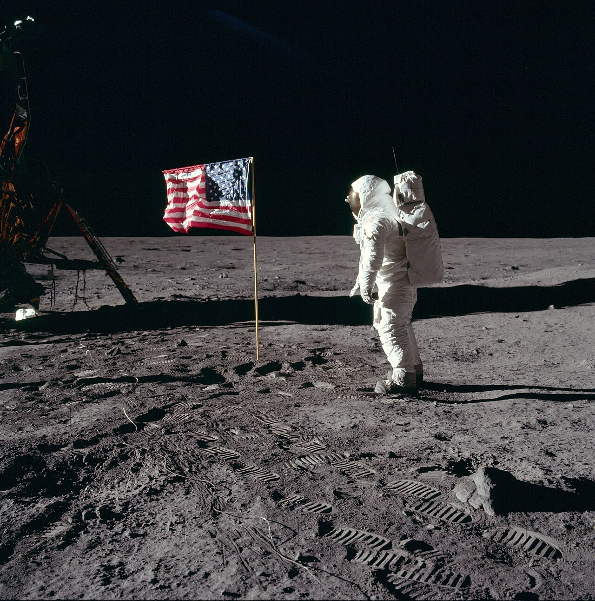

Then Armstrong walked 196 feet (60 m) from the LM to take photographs at the rim of Little West Crater while Aldrin collected two core samples. He used the geologist's hammer to pound in the tubes—the only time the hammer was used on Apollo 11—but was unable to penetrate more than 6 inches (15 cm) deep. The astronauts then collected rock samples using scoops and tongs on extension handles.
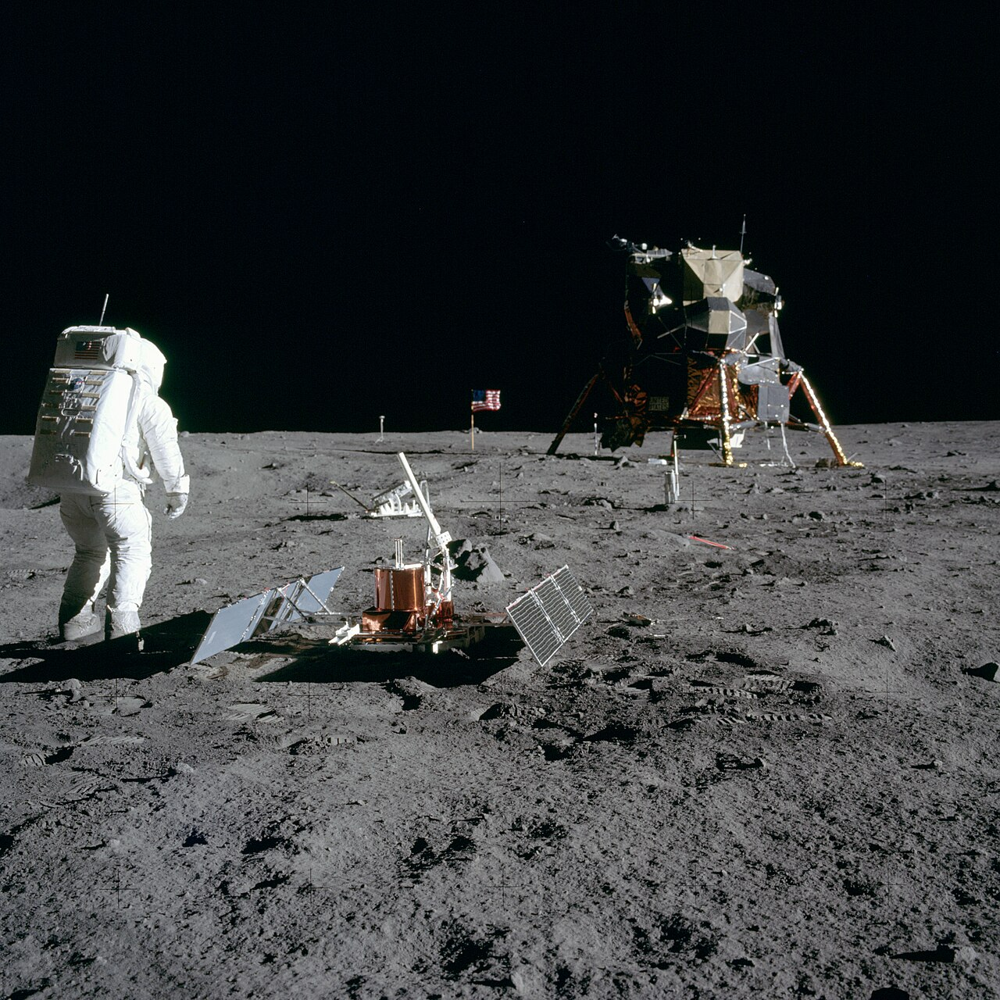
Two types of rocks were found in the geological samples: basalt and breccia. Three new minerals were discovered in the rock samples collected by the astronauts: armalcolite, tranquillityite, and pyroxferroite. Armalcolite was named after Armstrong, Aldrin, and Collins. All have subsequently been found on Earth.

At the behest of the Nixon administration to add a reference to God, NASA included the vague date as a reason to include A.D., which stands for Anno Domini (“in the year of our Lord”).
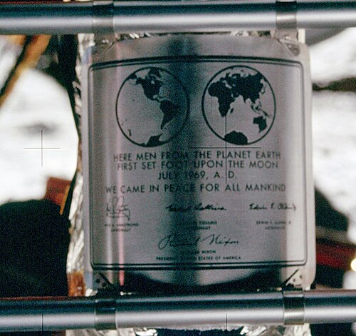
Aldrin entered Eagle first. With some difficulty the astronauts lifted film and two sample boxes containing 21.55 kilograms (47.5 lb) of lunar surface material to the LM hatch using a flat cable pulley device called the Lunar Equipment Conveyor (LEC). This proved to be an inefficient tool, and later missions preferred to carry equipment and samples up to the LM by hand. Armstrong reminded Aldrin of a bag of memorial items in his sleeve pocket, and Aldrin tossed the bag down. Armstrong then jumped onto the ladder's third rung, and climbed into the LM. After transferring to LM life support, the explorers lightened the ascent stage for the return to lunar orbit by tossing out their PLSS backpacks, lunar overshoes, an empty Hasselblad camera, and other equipment. They then pressurized the LM and settled down to sleep.
14:30:00 → 23:41:31 UTC
09 h 11 m 31 s
A fourth lane opens here, uninvited, and ends after eighty minutes. Luna 15 had been in lunar orbit since before Apollo 11 arrived; it began its descent to beat them home. Its lane is the only other thing on this page permitted to be red.
The remarks were in a memo from Safire to Nixon's White House Chief of Staff H. R. Haldeman, in which Safire suggested a protocol the administration might follow in reaction to such a disaster. According to the plan, Mission Control would “close down communications” with the LM, and a clergyman would “commend their souls to the deepest of the deep” in a public ritual likened to burial at sea. The last line of the prepared text contained an allusion to Rupert Brooke's World War I poem “The Soldier”. The script for the speech does not make reference to Collins; as he remained onboard Columbia in orbit around the Moon, it was expected that he would be able to return the module to Earth in the event of a mission failure.
An Apollo 1 mission patch in memory of astronauts Roger Chaffee, Gus Grissom, and Edward White, who died when their command module caught fire during a test in January 1967; two memorial medals of Soviet cosmonauts Vladimir Komarov and Yuri Gagarin, who died in 1967 and 1968 respectively; a memorial bag containing a gold replica of an olive branch as a traditional symbol of peace; and a silicon message disk carrying the goodwill statements by presidents Eisenhower, Kennedy, Johnson, and Nixon along with messages from leaders of 73 countries around the world. The disk also carries a listing of the leadership of the US Congress, a listing of members of the four committees of the House and Senate responsible for the NASA legislation, and the names of NASA's past and then-current top management.
Film taken from the LM ascent stage upon liftoff from the Moon reveals the American flag, planted some 25 feet (8 m) from the descent stage, whipping violently in the exhaust of the ascent stage engine. Subsequent Apollo missions planted their flags farther from the LM.
Just before the Apollo 12 flight, it was noted that Eagle was still likely to be orbiting the Moon. Later NASA reports mentioned that Eagle's orbit had decayed, resulting in it impacting in an “uncertain location” on the lunar surface. In 2021, however, some calculations show that the lander may still be in orbit.
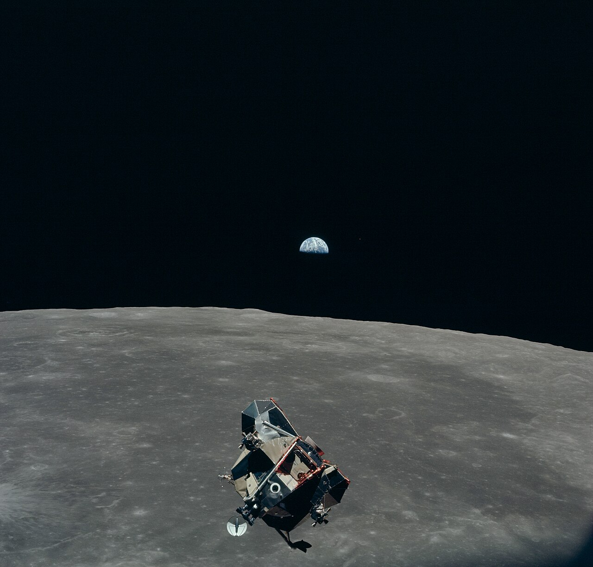
Despite having been known to be orbiting the Moon at the same time, through a ground-breaking precautious goodwill exchange of data, the mission control of Luna 15 unexpectedly hastened its robotic sample-return mission, initiating descent, in an attempt to return before Apollo 11. British astronomers monitored Luna 15 and recorded the situation; one commented: “I say, this has really been drama of the highest order”, bringing the Space Race to a culmination.
04:55:42 → 16:44:00 UTC
2 d 11 h 48 m 18 s
Three lanes collapse to one. The clock stretches out again for two and a half days — and the most consequential decision of the return was taken on the ground, by three men reading a satellite photograph one of them was not cleared to discuss.
Poor visibility which could make locating the capsule difficult, and strong upper-level winds which “would have ripped their parachutes to shreds” according to Brandli, posed a serious threat to the safety of the mission. Brandli alerted Navy Captain Willard S. Houston Jr., the commander of the Fleet Weather Center at Pearl Harbor, who had the required security clearance. On their recommendation, Rear Admiral Donald C. Davis, commander of Manned Spaceflight Recovery Forces, Pacific, advised NASA to change the recovery area, each man risking his career. A new location was selected 215 nautical miles (398 km) northeast.
This altered the flight plan. A different sequence of computer programs was used, one never before attempted. In a conventional entry, trajectory event P64 was followed by P67. For a skip-out re-entry, P65 and P66 were employed to handle the exit and entry parts of the skip. In this case, because they were extending the re-entry but not actually skipping out, P66 was not invoked and instead, P65 led directly to P67. The crew were also warned they would not be in a full-lift (heads-down) attitude when they entered P67. The first program's acceleration subjected the astronauts to 6.5 standard gravities (64 m/s²); the second, to 6.0 standard gravities (59 m/s²).
She replaced her sister ship, the LPH USS Princeton, which had recovered Apollo 10 on May 26. Hornet was then at her home port of Long Beach, California. On reaching Pearl Harbor on July 5, Hornet embarked the Sikorsky SH-3 Sea King helicopters of HS-4, a unit which specialized in recovery of Apollo spacecraft, specialized divers of UDT Detachment Apollo, a 35-man NASA recovery team, and about 120 media representatives. To make room, most of Hornet's air wing was left behind in Long Beach. Special recovery equipment was also loaded, including a boilerplate command module used for training.
On July 12, with Apollo 11 still on the launch pad, Hornet departed Pearl Harbor for the recovery area in the central Pacific. A presidential party consisting of Nixon, Borman, Secretary of State William P. Rogers and National Security Advisor Henry Kissinger flew to Johnston Atoll on Air Force One, then to the command ship USS Arlington in Marine One. After a night on board, they would fly to Hornet in Marine One for a few hours of ceremonies. On arrival aboard Hornet, the party was greeted by the Commander-in-Chief, Pacific Command, Admiral John S. McCain Jr., and NASA Administrator Thomas O. Paine, who flew to Hornet from Pago Pago in one of Hornet's carrier onboard delivery aircraft.
Aldrin added: “This has been far more than three men on a mission to the Moon; more, still, than the efforts of a government and industry team; more, even, than the efforts of one nation. We feel that this stands as a symbol of the insatiable curiosity of all mankind to explore the unknown …”
“The responsibility for this flight lies first with history and with the giants of science who have preceded this effort; next with the American people, who have, through their will, indicated their desire; next with four administrations and their Congresses, for implementing that will; and then, with the agency and industry teams that built our spacecraft, the Saturn, the Columbia, the Eagle, and the little EMU, the spacesuit and backpack that was our small spacecraft out on the lunar surface. We would like to give special thanks to all those Americans who built the spacecraft; who did the construction, design, the tests, and put their hearts and all their abilities into those craft. To those people tonight, we give a special thank you, and to all the other people that are listening and watching tonight, God bless you. Good night from Apollo 11.”
16:44:00 → 17:53:00 UTC
01 h 09 m
The scale compresses harder here than anywhere on the page: sixty-nine minutes are given more vertical space than the three days of transit. Seven of those minutes are the fall between the drogue parachutes and the water.
The divers then passed biological isolation garments (BIGs) to the astronauts, and assisted them into the life raft. The possibility of bringing back pathogens from the lunar surface was considered remote, but NASA took precautions at the recovery site. The astronauts were rubbed down with a sodium hypochlorite solution and Columbia wiped with povidone-iodine to remove any lunar dust that might be present. The astronauts were winched on board the recovery helicopter. BIGs were worn until they reached isolation facilities on board Hornet. The raft containing decontamination materials was intentionally sunk.
82 °F (28 °C) with 6 feet (1.8 m) seas and winds at 17 knots (31 km/h) from the east were reported under broken clouds at 1,500 feet (460 m) with visibility of 10 nautical miles (19 km) at the recovery site.
During splashdown, Columbia landed upside down but was righted within ten minutes by flotation bags activated by the astronauts.
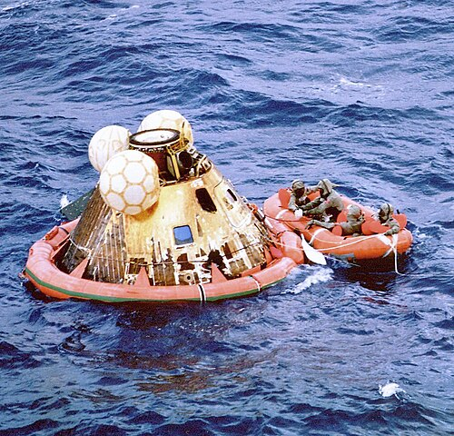
This practice would continue for two more Apollo missions, Apollo 12 and Apollo 14, before the Moon was proven to be barren of life, and the quarantine process dropped. Nixon welcomed the astronauts back to Earth. He told them: “[A]s a result of what you've done, the world has never been closer together before.”
Mission duration: 8 days, 3 hours, 18 minutes, 35 seconds. Landing mass 10,873 lb, from a launch mass of 109,646 lb: nine-tenths of what left Florida did not come back.
quarantine lifted
and then fifty years
The staves do not simply stop. Position still means something here — but it is place, not time. Everything the mission carried went somewhere, and most of it is still there.
Each line is a custody claim, and each one is made by the row beneath it: the objects follow the vehicle the article says carried them, not the lane they were narrated in. Eagle’s descent stage was never Houston’s.
§ Launch and flight · p43
§ Lunar ascent · p71, p74, p76
§ Experiment results · p116
§ LM Eagle memorabilia · p118
§ Celebrations · p96, p97